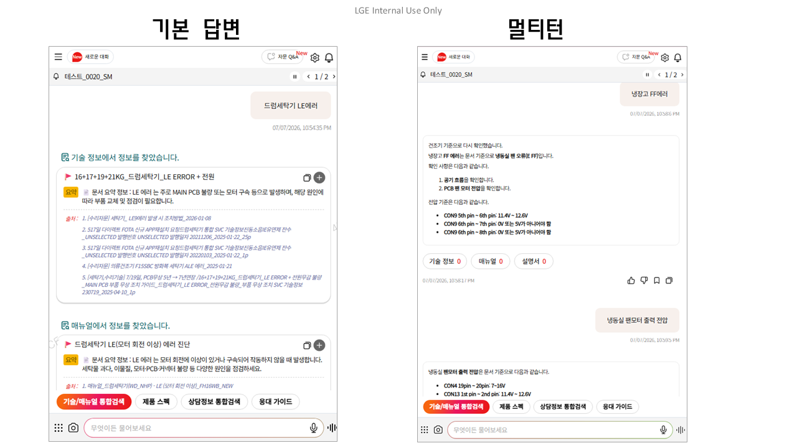

* 답변
펼치기 기능은 7월 3주차 반영 예정
* 멀티턴
답변 적확도는 고도화 진행중입니다
냉동실 냉기 약함은 먼저 PCB에서 하우징을 제거한 뒤 냉장실 센서 저항이 표의 값과 같은지 확인하고, 다르면 센서 문제로 120A 부품을 적용합니다. 이후 유닛을 리셋해 테스트 모드 1 또는 2를 투입한 뒤 냉동실 문을 열어 찬바람이 나오는지 확인하고, 바람이 없으면 냉동실 제어와 R Fan Motor를 점검합니다.
냉동과 냉장이 모두 안 되면 전원 코드와 도어 닫힘 상태, 디스플레이의 깜빡임이나 에러 표시를 먼저 확인해 보셔야 합니다. 전원 재인가 후에도 차가운 냉기가 없거나 에러 문구가 계속 뜨면 방문 점검이 필요합니다.
드럼 세탁기 LE 에러 발생 시, 부품 교체가 64%로 가장 높고 조정 수리가 10%, 설명 처리가 2%를 차지합니다. 부품 교체 중에서는 메인 PCB 교체 비율이 72%로 가장 높은 비중을 차지합니다..
현재 확인 가능한 이력 정보가 없습니다.
진단 이력 및 S/W 버전 정보를 확인합니다.
| 접수 번호 | 진단 일시 | 이력 보기 |
|---|---|---|
| P00000000 | 2026-03-19 11:46:25 | 보기 |
| P00000001 | 2026-03-18 12:46:25 | 보기 |
| P00000002 | 2026-03-17 13:46:25 | 보기 |
| 접수 번호 | 진단 일시 | 부품 번호 | 체크섬(이전) | 체크섬(이후) |
|---|---|---|---|---|
| P00000000 | 2026-03-19 11:46:25 | SAA00000000 | 0×00001212 | 0×00001221 |
| P00000001 | 2026-03-18 12:46:25 | SAA00000001 | 0×00001213 | 0×00001224 |
| 접수 번호 | 진단 일시 | 부품 번호 | 체크섬 |
|---|---|---|---|
| P00000000 | 2026-03-19 11:46:25 | SAA00000000 | 0×00001221 |
| P00000001 | 2026-03-18 12:46:25 | SAA00000001 | 0×00001224 |
냉동실 온도 이상 상승 확인, 팬 모터 점검 필요
| 고장원인 | 비중 | 부품 | 조정 | 설명 | 방문/취소 | 비용 |
|---|---|---|---|---|---|---|
| 소계 | 77% | 11% | 47% | 19% | - | - |
| 건조약/도어틈 | 39% | 7% | 24% | 7% | - | 83,500 |
| 기능미숙/설정미숙 | 25% | 1% | 13% | 11% | - | 72,500 |
| 메인보드 | 14% | 3% | 10% | 1% | - | 103,000 |
| 부품명 | 부품 번호 | 수량 | 단가 | 재고 |
|---|---|---|---|---|
| Pure Chem,R-600A | RAC30248901 📋 | 193 (22%) | 6,500 | 12 |
| Compressor,Assy | AQM30077035 📋 | 107 (12%) | 341,000 | 4 |
